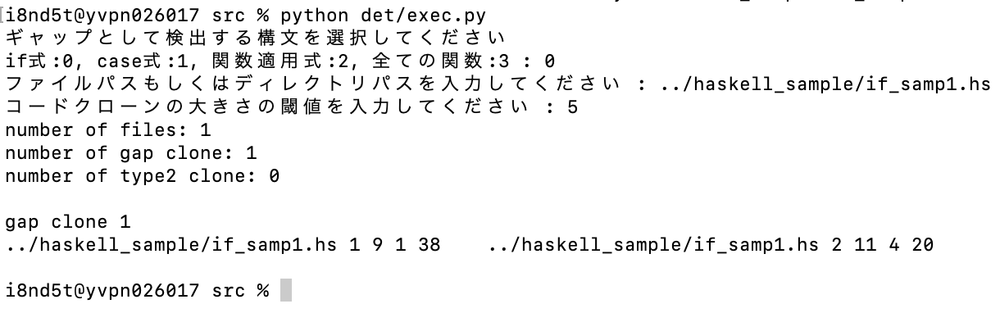

構文単位のギャップを考慮した関数型言語に対するtype3コードクローン検出手法の提案および実装
このページでは、2023年3月 電子情報通信学会総合大会の論文
「構文単位のギャップを考慮した関数型言語に対するtype3コードクローン検出手法の提案および実装
」
で提示した方式を実装したプログラムのソースコードを公開しています。
使い方
clone_detect.zip
をダウンロードして展開し、README.mdに従ってインストール、実行してください。
スクリーンショット

更新履歴
- 2023年2月6日 version 0.1.0 を公開